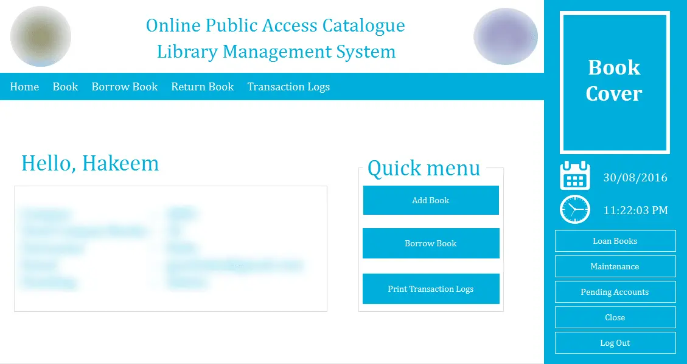
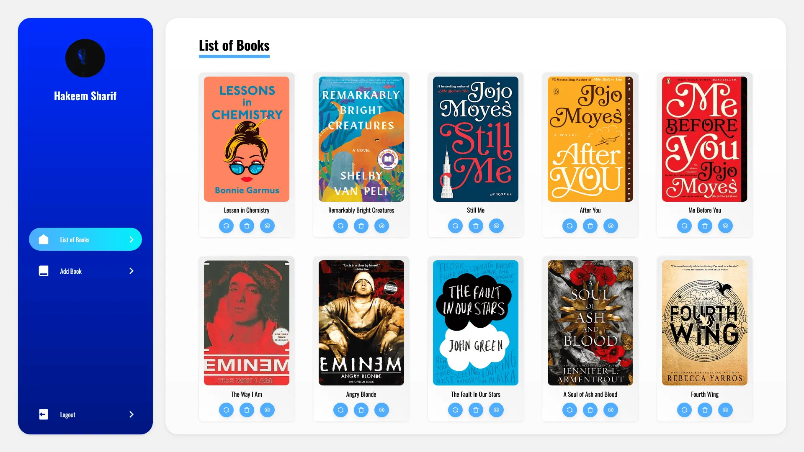
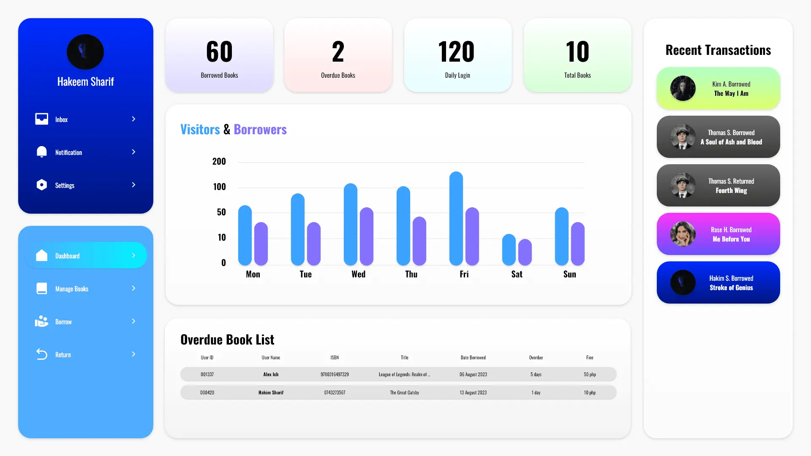

OPAC-LMS
Description
- This project is a partial remake of my thesis back in college it only includes CRUD function for the books. (WIP)
Technologies / Tools
- HTML5, SCSS, Node.JS, Express.JS, & MySQL
Demo
Main Page
2016 version (VB.NET)

2023 version

Full Remake Concept Design
Used Adobe XD for the concept design
